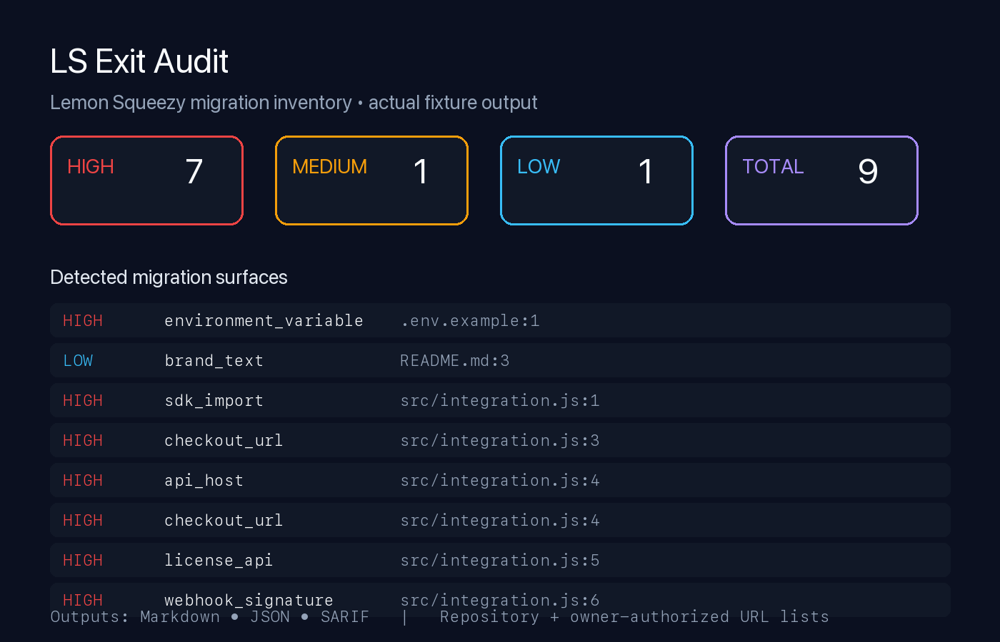

Developer migration utility · v0.3.0
Know every Lemon Squeezy dependency before you migrate.
LS Exit Audit scans a local repository and an explicit list of owner-authorized public pages for checkout links, SDKs, API hosts, environment variables, licensing calls, webhook signatures/events, and customer-facing brand references.
Request a copy — US$29
One-time license
Included
- Zero-dependency Node.js CLI source package
- Local repository and controlled URL-list scanning
- Markdown, standalone HTML, JSON, and SARIF reports
- CI threshold for unresolved high-severity findings
- Tests, sanitized fixture, sample reports, and quick start
Safe by design
- No store credentials required
- Local scan does not make network requests
- URL mode only fetches URLs explicitly supplied
- Likely secrets are redacted
- Timeout, response-size limit, and per-page error continuation
Requirements
- Node.js 20+
- macOS, Linux, or Windows
- Network access only for optional
scan-urls
Support covers installation and documented usage. This is an inventory tool, not a payment-provider migration service.
Actual fixture output
Generated by the packaged CLI from its included sanitized fixture.

Purchase and delivery
- Open a purchase request with your environment and intended use.
- We confirm the supported payment asset/network before providing any payment destination.
- After verified settlement, you receive the exact v0.3.0 ZIP plus SHA-256 checksum and quick-start instructions.
Do not post credentials, repository contents, customer data, wallet secrets, or other sensitive information in the public request. Payment networks are never substituted.
Start purchase request